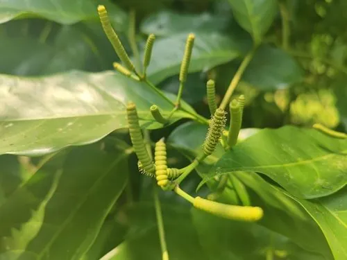

蕨类与裸子植物 · 植物界
买麻藤 Gnetum montanum

买麻藤是罕见的藤本裸子植物，阔叶对生、状似双子叶植物，种子可炒食，茎皮纤维可制绳，是研究演化的活材料。
- 分类
- 门裸子植物门纲买麻藤纲目买麻藤目科买麻藤科属买麻藤属
- 栖息环境
- 热带、亚热带沟谷雨林与季雨林中，攀援于大树，喜温暖湿润
- 地理分布
- 中国云南、广西、广东、海南等地，东南亚也有分布
- 保护级别
- 暂无评估；野生资源因采挖有所减少
物种志
买麻藤是买麻藤科常绿木质藤本，茎长达 10 m 以上，攀援于树木之间。它是裸子植物中罕见的“阔叶”类群：叶片对生，革质，椭圆或卵状椭圆形，全缘，有羽状叶脉，外观很像被子植物。雌雄异株，球花穗状，腋生或顶生。种子核果状，卵状椭圆形，成熟时外皮红色或橙黄色，内含一粒种子。
买麻藤分布于中国云南、广西、广东、海南等地的热带、亚热带森林，常攀援于沟谷林中的大树上，喜温暖湿润、半阴的环境。它的种子可炒食或榨油，茎皮纤维坚韧，可制绳索和麻袋，茎叶在民间也作药用。买麻藤兼具裸子植物与被子植物的某些特征，是研究种子植物演化的重要材料。由于森林砍伐与过度采挖，野生买麻藤资源有所减少，需要合理保护。
形态与习性
- 习性常绿木质藤本，茎长 10 m 以上
- 叶对生阔叶，有羽状叶脉
- 种子核果状，成熟时红色或橙黄
- 用途种子可炒食，茎皮纤维制绳
- 特征兼具裸子与被子植物特征
- 分布热带与亚热带森林
趣味知识
- 买麻藤是少数长着阔叶的裸子植物，外形很像被子植物。
- 它的种子外皮成熟后红艳，种子可炒食或榨油。
- 买麻藤的茎皮纤维坚韧，可用来搓绳、织麻袋。